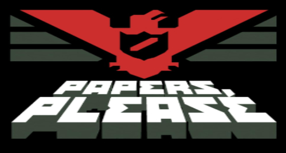

Undertale


RimWorld

Papers, Please, sizi göçmenlik memuru rolüne sokan eşsiz bir simülasyon oyunudur. PC platformunda oynayabileceğiniz bu indie oyun, kararlarınızın sınandığı yoğun ve sürükleyici bir deneyim sunuyor. Oyuncular, sınır kapısında çalışarak belgeleri kontrol ediyor, doğru kararlar vererek hem vatandaşların hem de kendi ailenizin güvenliğini sağlamaya çalışıyor. Bu oyun, strateji ve dikkat gerektiren mekanikleri ile ön plana çıkıyor. Karakterinizin seçimleri, oyunun ilerleyişini ve hikayeyi doğrudan etkiliyor. “Papers, Please” sayfasında, oyunun detaylarını inceleyebilir ve benzer indie oyunları keşfedebilirsiniz. Eğer strateji, simülasyon ve karar verme üzerine bir PC oyunu arıyorsanız, Papers, Please sizi bekliyor. BallasNet’te oyunu keşfedin ve keyfini çıkarın.
Papers Please, Lucas Pope tarafından geliştirilen ödüllü bir indie simülasyon oyunudur. Oyuncular, bir sınır kapısında memur olarak çalışarak kişilerin belgelerini kontrol eder. Papers Please, dikkat ve strateji gerektirdiği için simülasyon ve bulmaca oyunlarını sevenler için ideal bir deneyim sunar. Minimalist 2D grafikleri ve yoğun atmosferiyle Papers Please, PC kullanıcıları tarafından sıkça tercih edilen bir oyun haline gelmiştir.
Papers Please’i kurmak için sayfadaki 1, 2 veya 3. linklerden birine tıklayıp dosyayı indirin. İndirilen zip dosyasını açın ve "Papers Please.exe" dosyasını çalıştırarak oyunu oynayabilirsiniz. Bu yöntemle Papers Please’i kolayca PC’nize yükleyebilirsiniz.
Oyun zaten türkçe gelmektedir, ekstra birşey yapmanıza gerek yoktur.
İndirme dosyası (ZIP) yaklaşık 56 MB, kurulduktan sonra oyun boyutu ~100 MB civarındadır. Düşük depolama alanı olanlar için ideal bir boyuttur.
Windows 7, 8, 10 ve 11 ile tam uyumludur.
Sayfada 3 alternatif indirme linki bulunur, hepsi aynı dosyayı verir; herhangi birini seçebilirsiniz.
Evet, BallasNet üzerinden tüm oyunlar tamamen ücretsiz indirilebilir.
Hayır, dosyalar güvenlidir ve düzenli olarak kontrol edilmektedir.
Hayır, ekstra yamaya gerek yoktur çünkü oyun zaten Türkçe dil desteğiyle gelir.